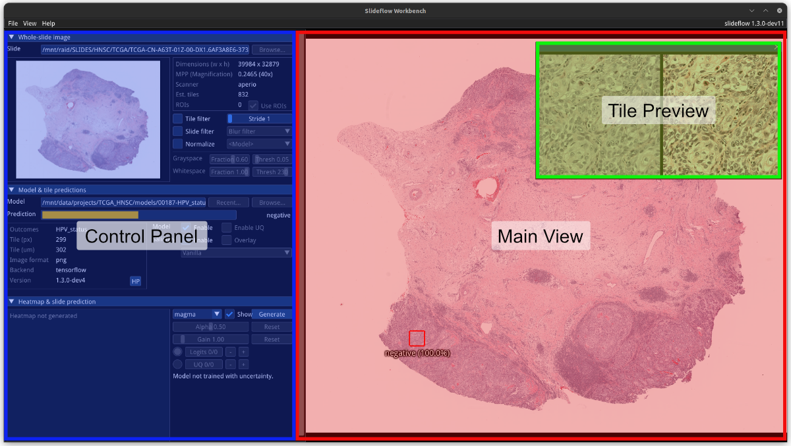
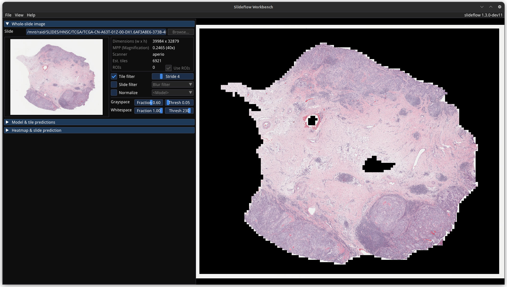
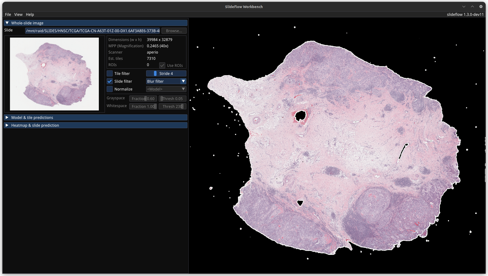
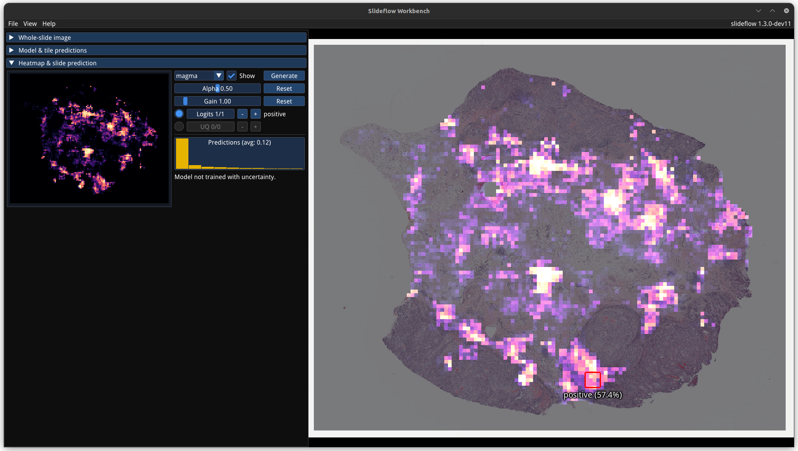
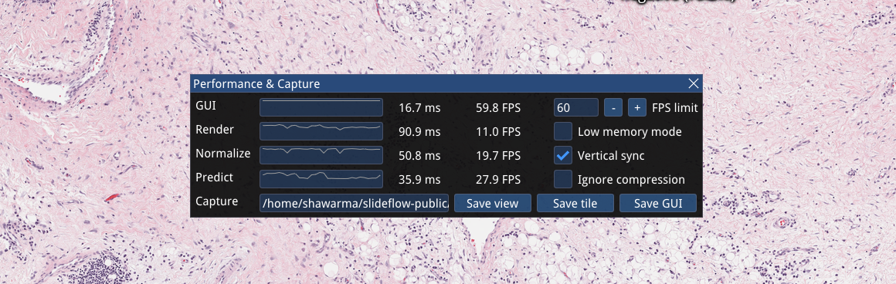

Workbench: Visualization Tools¶
New in Slideflow 1.3, Workbench provides powerful tools for interactive visualization of model predictions for whole-slide images and GAN-generated images. It’s also fast - with an OpenGL renderer and highly optimized whole-slide image viewer, you’ll get a smooth experience that can even run on a Raspberry Pi.
Run workbench using the workbench.py script in the main repository folder. A path to a whole-slide image can optionally be provided as the first argument.
python3 workbench.py /path/to/slide.svs
Use the --help flag to see a list of available arguments.
Layout & design¶
The Workbench window has three primary areas: the main viewer, a tile preview, and the control panel. Fullscreen mode can be toggled with View -> Fullscreen or by pressing Ctrl+F.
Main viewer¶
The main viewer is an interactive display for whole-slide images, supporting panning with mouse click-and-drag and zooming with the mouse wheel. When a model is loaded, right clicking on the main viewer sets the prediction location, drawing a red box outlining the location that a tile was extracted and displaying the prediction underneath.
Tile preview¶
Right clicking on the main view will establish the location for a focal tile prediction. A tile will be extracted from this location of the whole-slide image at the pixel & micron size appropriate for the loaded model. The tile preview window shows the extracted image tile taken from this location. If the loaded model uses stain normalization, a post-normalization image is also shown on the right. The tile preview window can be hidden by clicking the X in the top right corner, or toggled via the menu item View -> Show -> Tile Preview.
Control panel¶
The control panel shows relevant active widgets which contain information and controls for whole-slide images, loaded models, heatmaps, and loaded GANs. Widgets will be automatically hidden when not in use (for example, the model widget will be hidden if a model is not loaded). The control panel is docked by default, but can be undocked with View -> Dock Controls or by pressing Ctrl+Shift+D. The control panel can be hidden with View -> Show -> Control Pane or by pressing Ctrl+Shift+C.
Whole-slide images¶

Whole-slide images can be loaded directly with File -> Open Slide. Alternatively, it may be faster to switch between slides by first loading a corresponding Slideflow project. Projects are loaded with File -> Open Project, and once loaded, the slide and model widgets will have a “Browse” button that can be used to quickly load any slide or saved model in the project. Slides can be closed with File -> Close Slide.
A thumbnail of the loaded slide is shown on the left side of the slide widget. The right side of the widget shows a preview of slide properties, including dimensions, highest scanned magnification, slide scanner vendor, and how many annotated regions-of-interest (ROIs) are loaded for the slide. ROIs are loaded automatically if a Project is loaded, but can be disabled by unchecking “Use ROIs”.
Preview tile filter¶
The tile filtering strategy can be previewed by checking “Tile filter”. Change the stride, grayspace fraction/threshold, and whitespace fraction/threshold to see how tuning these parameters alters this filtering step.
Preview slide filter¶
Similarly, the slide filtering strategy can be previewed by checking “Slide filter”. Filtering options that can be previewed include blur filtering, Otsu’s thresholding, or both. If “Tile filter” and “Slide filter” are both selected, tiles will be filtered with both.
Preview slide normalization¶
Stain normalization strategies can be quickly previewed by checking “Normalize”, which will apply the associated normalization strategy to the main view. If a model is loaded, the model’s normalizer will be used by default. The normalizer can be changed with the corresponding dropdown menu, allowing you to preview any normalization method. All normalizer methods shown except for the model normalizer will use the “v2” fit (see slideflow.norm for more information).
Models & tile predictions¶

Slideflow models can be loaded with File -> Open Model, or via the “Browse” button of the model widget if a Project has been loaded. Both Tensorflow and PyTorch models are supported. Models can be closed with File -> Close Model.
Once a model is loaded, right-click anywhere on the main viewer to set the tile extraction location for the tile preview. A tile will be extracted at this location matching the pixel and micron size of the loaded model. The extracted tile will be shown pre- and post- stain normalization (if applicable) in the tile preview window. Right click and drag to slide the preview window. The model prediction at this location will be shown underneath the red box in the main view, and in histogram format (for categorical models) in the model widget, along with the class label for categorical models.
A summary of the loaded model is shown on the left side of the model widget, containing information about the model outcomes, tile size, image format (PNG/JPG), backend (Tensorflow/PyTorch), and the version of Slideflow used to train the model. Click the “HP” button to show a list of all hyperparameters used during model training.
A model will be enabled by default once loaded, but can be disabled by unchecking the corresponding checkbox in the model widget. Similarly, uncertainty quantification (UQ) is used by default for models trained with UQ. To disable UQ for these models, uncheck the corresponding box.

Saliency maps for the given model and image tile can be previewed in real-time by checking the “Saliency” box. The saliency map will replace the extracted image tile in the tile preview window. Alternatively, saliency can be viewed as an overlay on top of the extracted image tile by checking the box “Overlay”. The dropdown menu below this section can be used to change the saliency method.
Heatmaps & slide predictions¶
Once a model is loaded, the heatmap widget can be used to generate and display whole-slide heatmaps and slide predictions. Heatmaps are generated using the settings configured in the slide widget (including stride, tile filter, and slide filter). Click “Generate” in the heatmap widget to create the heatmap. Color scheme can be changed with the dropdown menu, as can the alpha and gain. You can switch which outcome is being displayed as a heatmap by cycling through the available logits. If the model was trained with uncertainty quantification (UQ), click the radio button next to UQ to show uncertainty as a heatmap.
The heatmap widget also shows a histogram of tile-level predictions (after filtering), as well as the final slide-level prediction, which is an average of these tile-level predictions.
By default, heatmaps are calculated with multiprocessing pools. This may come at the cost of heavy memory utilization. To decrease memory utilization at the cost of slower heatmap calculation, switch to low memory mode using the performance widget (described below), or by using the launch flag --low_memory.
StyleGAN¶
Trained StyleGAN2 or StyleGAN3 networks can be visualized by enabling GAN mode, using the launch option --stylegan. Once enabled, GAN .pkl files can be loaded with File -> Load GAN. Generated images are shown in the tile preview window. Model predictions on GAN images operate similarly to predictions on whole-slide images. Predictions on GAN images are generated in real-time, and you can watch the predictions change in the model widget.
By default, Workbench will generate predictions on the full GAN image (after resizing to match the model’s tile_px value). If a training_options.json file is found in the same directory as the GAN .pkl, the tile size used to train the GAN will be read from this file (slideflow_kwargs/tile_px and ../tile_um). If the GAN was trained on images with a different tile_um value, the GAN image will be cropped to match the model’s tile_um before resizing. The cropped/resized (and stain normalized) image will be shown to the right of the raw GAN image in the tile preview window.
The StyleGAN widget can be used to travel the GAN latent space, as implemented in the official NVIDIA StyleGAN3 repository. Set a specific seed in the input field next to “Latent”, or click and drag the “Drag” button. If the model was trained with class conditioning, manually set the class with the “Class” field (the default value of -1 selects a random class).
The style mixing widget can be used to mix styles between seeds, styles between classes, or both. You can control the degree of mixing with a slider, and select which GAN layers are used during the mixing.
Capture & export¶
Export contents of the main view to a PNG file with File -> Export -> Main view. Similarly, the extracted image tile shown in the tile preview window can be exported with File -> Export -> Tile view. A screenshot of the entire window interface can be saved with File -> Export -> GUI view.
Heatmaps can be saved in PNG format with File -> Export -> Heatmap (PNG). Alternatively, heatmaps can also be exported in numpy format (NPZ) with File -> Export -> Heatmap (NPZ). The heatmap of logits will be saved in the exported NPZ file under the key 'logit', with the shape (y_dim, x_dim, num_logits). If the model was trained with uncertainty, the uncertainty heatmap will be saved under the key 'uncertainty'.
Performance monitoring¶
Workbench’s performance can be monitored with the performance widget, accessed via View -> Show -> Performance, or by pressing Ctrl+Shift+P. This widget displays frametimes for GUI display, image rendering, normalization, and model prediction. This widget can also be used to set a FPS limit (defaults to 60) and vertical sync (enabled by default). Low memory mode can be enabled here; when enabled, heatmaps are calculated with threadpools rather than multiprocessing pools, which decreases memory utilization at the cost of slower heatmap generation.